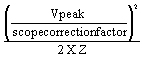

- 00000018WIA30559E20GYZ
- id_131068413.0
- Aug 29, 2019 1:43:15 AM
Dummy Load and Cables Calibration
Prerequisites
| Required persons | Preliminary requirements | Procedure | Finalization |
|---|---|---|---|
| 1 | - | - | - |
| Item | Quantity | Effectivity | Part number | Manufacturer |
|---|---|---|---|---|
| 50-ohm dummy load, 200 watt, 30 dB attenuator - Bird Model 8322 (or equivalent). | 1 | - |
46-317724P14 | - |
| RF Test Cables Kit | 1 | - |
46-255816G1 | - |
About this task
This procedure provides directions for determining the true loss attributable to the dummy load and cables used when measuring the RF output power with a wattmeter or oscilloscope of 100 MHz bandwidth or greater. It is necessary to know and account for the actual loss these components contribute in order to accurately measure RF power. This procedure is not needed if using the RF Power Measurement Kit. The RF Power Measurement Kit has already been calibrated so that this loss is known and accounted for.
WHEN MEASURING HIGH FREQUENCY (IN THIS CASE, 42 OR 64 MHZ ) ON ANY 100 MHZ SCOPE, THERE MAY BE AN ERROR DUE TO THE BANDWIDTH LIMITATIONS OF THE SCOPE. (IF NECESSARY, READ Step 7 AT THE END OF THIS PROCEDURE.)
Procedure
- Calculation of RF power
Peak voltage should be used in the calculation in order to get an accurate result. It can be converted to power using the following formula as long as certain factors are known and accounted for. The scope correction factor MUST be known. So must the actual total loss attributed to anything that connects the measuring device to the source. This often includes the accumulated loss associated with the dummy load and any interconnecting cables. Table 6 shows the calculation of power if all the attenuating devices in the measurement circuit exhibited perfect loss; that is, the devices added no more or less loss than what they were designed to provide. Table 7 shows the same calculation of power but accounts for the measurement-circuit loss values in deriving the true power. Note that the loss has a significant impact on the calculated power.
Note:THE SCOPE CORRECTION FACTOR MUST BE KNOWN FOR THE FORMULAE SHOWN IN Table 6 AND Table 7. IF IT IS NOT KNOWN, DO NOT USE THIS METHOD. GROSSLY INACCURATE MEASUREMENTS AND POSSIBLE SYSTEM DAMAGE WILL RESULT.
Table 6. RF POWER CALCULATION WITH NO LOSS 
X dummy load and cables attenuation = RF Powerwhere “X” and “X” in the above formula signifies multiplication
Assume Z = 50 Ω, Vpeak = 40.0, scope correction factor = 1.00 (no loss), dummy load and cables atten. = 1000, (dummy load and cables are all ideal)
 X 1000 = 16000
Watts = 16 kW
X 1000 = 16000
Watts = 16 kW This result assumes a theoretically perfect situation in which there is no loss. These situations, in common practice, rarely exist!
Now, consider the "real life" type situation in Table 7 in which the loss is considered:
Table 7. RF POWER CALCULATION WITH LOSS CONSIDERED X dummy load and cables attenuation = RF Power where “X” and “X” in the above formula signifies multiplication
Assume Z = 50 Ω, Vpeak = 34.61, scope correction factor = 0.88, dummy load and cables atten. = 1028
 X 1028 = 15901 Watts (very close
to 16kW.)
X 1028 = 15901 Watts (very close
to 16kW.) Accounting for the loss resulted in an accurate answer. 15899 Watts is as close as we can hope to get to 16000 Watts without using the RF Power Measurement Kit. Note that if none of the loss had been accounted for the error could have been 3587 Watts or 22.6%. As a result, the observer would attempt to adjust the RF power far above the 16000 Watt limit!
Finalization
- Reconnect original cables to the System Cabinet I/F J1 and J2.
- Enable the (U)TNS.
If system is equipped with a TNS then remove the female-BNC to female-BNC adapter and reconnect RF cable A24 A1 A1 J12 (signal output) to the bottom of the body TNS module and RF cable A24 A1 A1 J2 (signal input) to the top of the body TNS module.
If the system is equipped with a UTNS: It is not currently necessary to disable the UTNS. No action is required.
Note:10.0 SOFTWARE ONLY: WHENEVER THE “CALMODE” CV IS CHANGED A TPS RESET MUST BE DONE BEFORE ATTEMPTING TO SCAN. THIS IS NECESSARY IN ORDER TO SET THE MGD BACK INTO IMAGING MODE. FAILURE TO DO THIS WILL RESULT IN THE LOSS OF RECEIVE SIGNAL AND AUTOPRESCAN FAILURES.
- 10.0 Software only: Perform a TPS Reset to set the MGD back to imaging mode so that the system will be able to scan. Failure to do this will result in Autoprescan failures due to a loss of receive signal.
- Perform one satisfactory head or body scan.